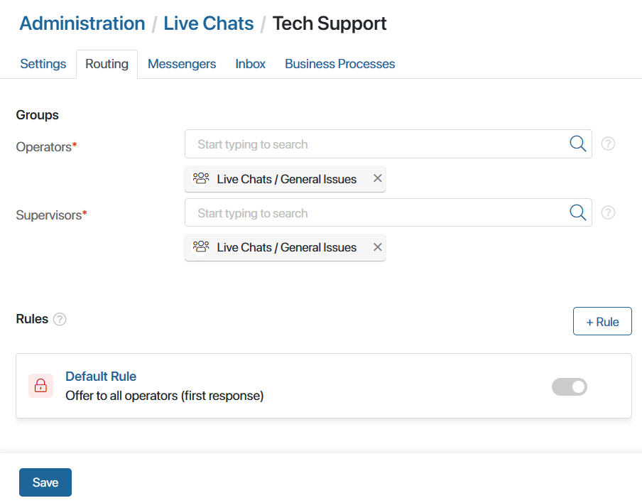
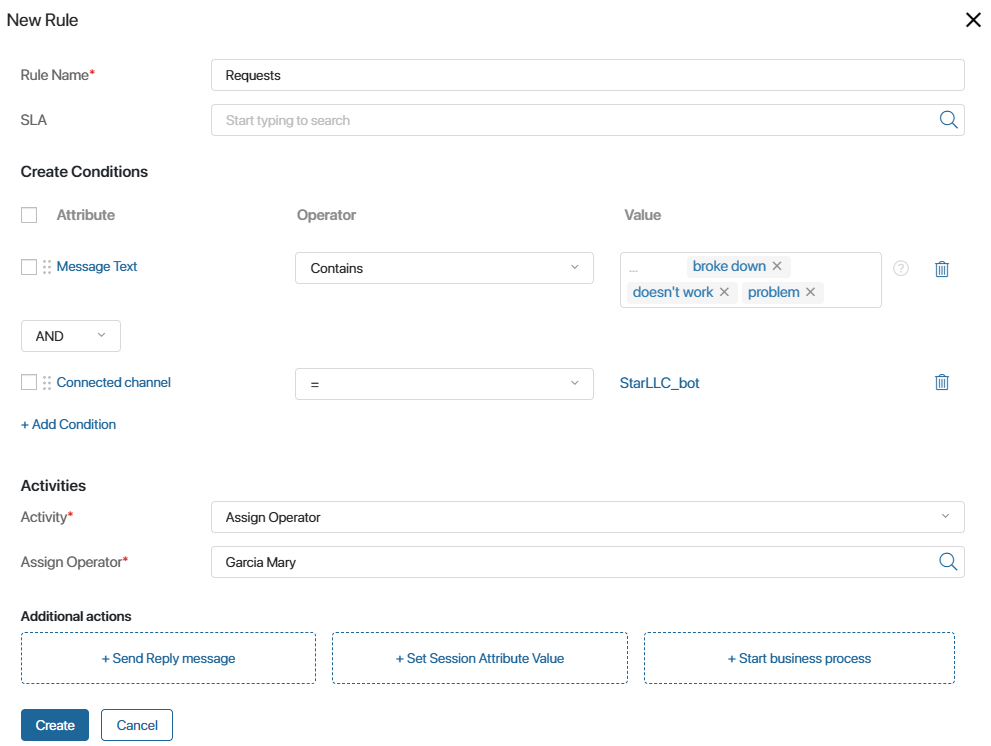
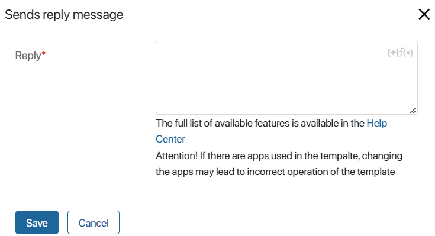
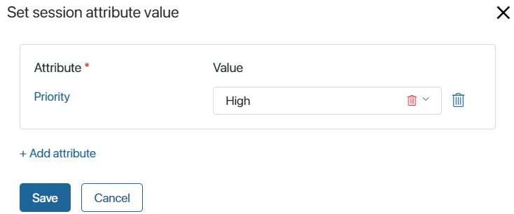
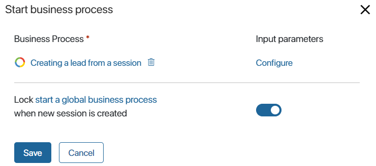
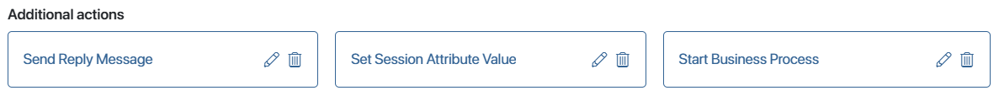

You can assign groups of employees who will be working with requests in a live chat.
You can also create custom routing rules that can be used to automatically distribute new sessions among certain operators or operator groups. For example, you can configure assigning requests received before afternoon to one group of operators, and those received after afternoon to another group of operators.
Also, for each rule, you can:
- Configure the automatic sending of a message to a new session. For example, so that the client receives a confirmation of receiving their request before the operator arrives.
- Set values for the properties of the new session. For example, to automatically set a high priority for the session when it is distributed.
- Select the business process that will be launched when the rule is activated.
Please note that routing rules are not applied to new sessions automatically marked as spam.
начало внимание
Only users included in the Administrators group can change the lists of live chat supervisors or operators and configure routing.
конец внимание
To edit the routing settings:
- Go to Administration > Live Chats.
- Select a live chat from the list or create a new one by clicking the +Live Chat button in the upper right corner.
- Switch to the Routing tab.

- Operators*. Groups of employees who reply to messages from the live chat. These employees can take sessions from the queue and view the sessions they are working on.
- Supervisors*. Groups of employees who oversee the work of operators. These employees have access to all sessions in the live chat and can assign operators to sessions.
- In the Rules section, you can see the Default rule. Each new session it is applied to is added to a single common queue. It is assigned to the operator who is the first to start working on it. You can also create custom routing rules.
- When the settings are complete, click Save.
Add a routing rule
You can set up your own rules to determine the operator responsible for each received request. For example, so that repeated customer requests are handled by the same employee, and outside regular hours messages are answered by a bot.
Each new request will be checked against these rules until one of them is applied to the request
To add a new rule, on the Routing tab in the Rules section, click +Rule. In the opened window, specify the parameters:

- Rule name*. Enter a name for the new rule.
- SLA. The field displays if the system administrator has enabled the
enableLinesSLAfeature flag. Select the SLA standards that will be applied to the sessions distributed by this rule. You can configure SLA expiration reminders and notifications when a standard is violated. For more information, see the Configure SLA in live chats article. - Create Conditions. In this section you can set the routing parameters:
- Attribute. Click Select an attribute and specify the session property whose value will be checked in the condition.
- Operator. Select a comparison operation that will be used when checking the condition from the list.
- Value. Set a value for the property from the Attribute column. For example, for the Time property, you can enter 1:00 PM and set ≤ in the Operator field. Then all messages received before the lunch break will be assigned to a specific operator or group of operators.
To create an additional condition, click +Add Condition. A new row for setting a condition appears. You can also see the logical operation that connects each two conditions checked within the rule:
- AND. For the rule to apply, both conditions have to be met.
- OR. At least one condition has to be met.
- OR NOT. Both conditions must not be met.
- AND NOT. The first condition has to be met, but the second one must not be met.
To group several conditions, check the boxes next to them and click the Group button.
- Activity*. In the drop-down, select an action that will be performed when the conditions set below are met:
- Assign to the least occupied operator in the group. The users in the group are checked, and an operator with the Online status with the least number of active sessions at the moment is selected. The new session is assigned to this operator. If you choose this option, the field for selecting an operator group appears. It is only possible to select groups specified in the Groups section of the settings.
- Invite all operators in a group. The new session is added to the queue for operators from a specific group. If you choose this action, a field for selecting a group of operators appears. It is only possible to select groups specified in the Groups section of live chat settings.
- Invite all operators. The new session is added to the common queue for all operators working with the live chat.
- Assign operator. The new session is automatically assigned to a specific operator. If you choose this option, a field for specifying the operator appears.
- Assign to the “last” operator. The session is assigned to the operator who replied to this client the previous time. This activity appears in the list if you created the condition First session with the client = No.
- Additional actions. You can add actions that will be performed when the rule is activated:
- +Send Reply Message. Create a message that will be automatically received by a customer who contacts a live chat for the first time. For example, you can add a greeting or confirmation that the message has been received.
To do this, enter the message text and click Save. To make the message more informative, you can use the {+} icon to add context variables to the message. To use conditions and functions, click the f(x) icon.

- +Set Session Attribute Value. Set values for the Priority field and custom properties added to the Sessions app context so that the operator does not have to fill in the information manually.
To do this, click +Add Attribute, then Select an attribute. Specify the property and set a value for it by selecting an option from the list or doing it manually. To remove a property from the list, click the trash can icon.
 - +Start business process. Select the process that will be started when this rule is applied. All processes configured at the company, workspace, and app levels of the system are available for selection.
In the Input parameters column, click Configure and map the properties of the Live Chats workspace to the variables of the selected business process. Then, when the instance is launched, data from the session will be passed into its context, such as the name of the live chat, customer email, subject, text of the last message, etc. Please note, that variables of the same type can be mapped. For example, to pass the text of a message, create a field of the String type in the business process.
If a certain business process is set to run for a routing rule, the business process set by default in the live chat settings will not be started for this message. To run a process from the live chat settings in parallel with a process from the routing rule, disable the default start locking option.

To change the settings of an additional action, tap the pencil icon. You can also delete an action by tapping the trash can icon.

The rule you created can be edited, copied, or deleted. To do any of these things, click the three dots icon to the right of the rule and select an action.
Whenever a new session is created within the live chat, it will be checked against the conditions in each routing rule. The rules are applied in the order they are placed on the settings page, from top to bottom, until one of the rules works. To change the order in which the rules are applied, drag them to new positions.
Please note that if according to the routing rules a session needs to be assigned to a specific operator, but at that moment this user’s status is Offline, the rule is not applied.
If the session is not distributed using any of the configured rules, the Default rule is applied to it. The session will go to the common queue for all operators.
Found a typo? Select it and press Ctrl+Enter to send us feedback